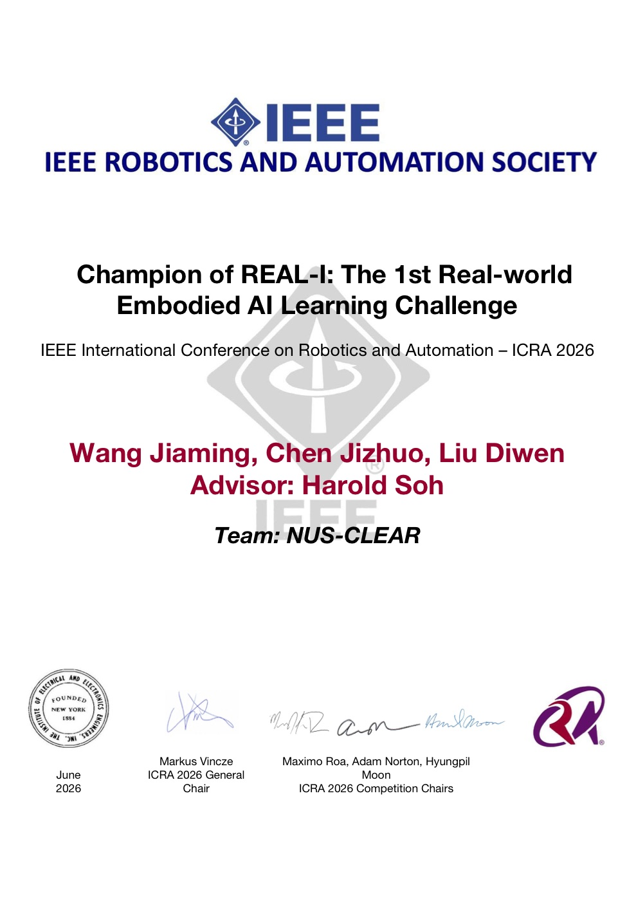

Champion · 1st Place · 2026
REAL-I: The 1st Real-world Embodied AI Learning Challenge — IEEE ICRA 2026
Won the inaugural challenge with an end-to-end VLA learning and deployment system, evaluated through simulation, real-robot experiments, and an on-site physical-robot final in Vienna. Team NUS-CLEAR: Jiaming Wang, Jizhuo Chen, Diwen Liu; advisor Harold Soh.
Challenge · Paper · How we won
